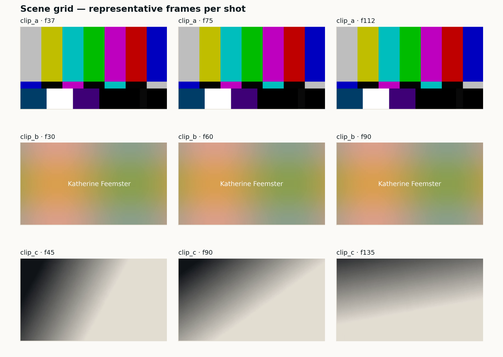

Dataset curation · ffmpeg · PySceneDetect · aHash
AI dataset video curation
The pipeline I run before any footage reaches a model. Scene detection via PySceneDetect, 8×8 average-hash deduplication, `ffprobe`-driven normalization to 1080p30 / yuv420p / AAC 48 kHz, and a diffable manifest.csv that reviewers can see in a PR.